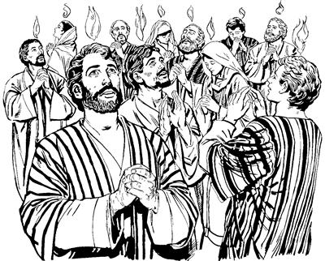

Allah Yame Walinge kulukul aogha (2:1-13)
2
1 Yahudi nimiri ik nubu sum si Pentakostaa taogpa, “Yesus otsik uro lebo” aro seneragtop nimi taneko ot nhonoghag poloro winiptangto wamek. 2 Poloro winiptangto wamekpa, imag agha khao yubu mu ana saog uro lelamogpa, lo'om alamekag agha, ae sin wamek ae anekoag mu aro tobonglamog. 3 Tobonglamogpa, nimi taneko toman a'ero-a'ero auk pog libang-libang arop saogne sinag pulamsiog. 4 Sinag pulamsiogti, Allah Eldamne Yame Walingeri sin nongag to'opto wa'isiogti, mikipne pipsiog. Mikipne pipsiogpa, sin ekon yubu ka'eptanep kom yubuag alnibaekti, a'erop-a'erop yubuag Allah Yame Walingeri tatsiogha sunsunum uro lelamek. 
Allah Eldamne Yame Walingeri Yesusag seneragtop nimi nongag to'opto wa'isiog. (ACT 2.4)
5 Wene aro lelamekti, as Yerusalem wamekpa, nimi sisa Yahudi nimi engeropnang Allahag yubu moloropne wamekpa, nimi sisa a'ero-a'ero nimi Allahag yubu moloropnang babe wamek. Allahag yubu moloropnang taneko wameknena, “Pentakosta sum uaukap,” aro anamag, mog so'o sirikag-sirikag agha yalamekti, yubu mo-mo lerop nimi Pentakosta sumeneko as Yerusalem wamek. 6 Yingkina wamekpa, Allah Eldamne Yame Walingeri tatsiogha sunsunum uro a'erop-a'erop yubuag lelameka yingkirop nimiri ka'ebaekti, Yahudi nimi maikno wamek nimi taneko longol alamek. Longol alamekti ka'elamsiekpa, “Yesusti otsik uro lebo” aro seneragtop nimiri yubu a'erop-a'erop yubuag lelamekpa, ka'elamsiek nimi tanekori, “Welaro lelamang? Nundam nimiri yubu ka'elamapti,” senelamek.
7 Ka'elamsiek nimi tanekori, “Welaro lelamang,” sembaekti, yubu lelamekti, “Sin nimi taneag mane agha uro yabil. Sin Yahudinang mog so'o Galilea nimi taneko kom te? 8 Ka'elamsiaba nununge yubuag lelamangba, welaro lelamang. Nununge as babe yubu babe a'ero lero urop nimi aghari. 9-11 Nunna mog so'o Partia agha, Media agha, Elam agha, Mesopotamia agha, Yudea agha, Kapadokia agha, Pontus agha, Asia agha, Frigia agha, Pamfilia agha, Mesir agha, Kirene peramag Libia agha, Kreta agha, Arab agha, Roma agha Yerusalem yingkiropnang Yahudi nimi wamap. Roma agha Yerusalem yingkirop nimi, nhon wamapne yangkan nimi aghana Roma nimi nhon-nhon Yahudi nimi saog uro taburi, sindi omeklamangneag omeklamap nimi aghari. Tam nubunge Allahri ualne sembe lelamangba, nu mog so'o sirikag-sirikag yingkiropnangdi ka'elamsiap,” alamek.
12 Sin wene alamek nimi tanekori, “Logti, mane agha sindi nun yubuag lelamang. Amik uro yabilulne welaro uro yabilul?” aro wene alamek. 13 Aghana sin nenneri lelamekti, “Mag yonge teangdi nenek saelbahilba lelamang,” aro og solamsiekti, pam kwereklamsiek.
Petrusti yubu ambatsiogha (2:14-36)
14 Wene alamsiekti, pam kwereklamsiekpa, Petrus neneko elkabo ko'olombare nang eneko babe sekekpa, Petrusti yubu nubu uro ambarelamsiogti, “A'un Yahudi nimi nangkabo, Yerusalem wamlom nimi nangkabo, nari ambatsinunne nene a'un niri ka'eamsuri seneragsu. 15 Wene heng ot weneog tingil albab wamap ane sembe, mag yonge teang koma agha lelamang. A'undi lelamlomne nene saog uro nimi tane mag teangba, nenek saelbahilba, lelamang kom. 16 Sindi lelamangne nenena samenag Allahri ambarelamogpa, Allahri yubu silimu tiplamogne Yoel nenekori mome toro pibogha sunsunum uro lelamang,” seog.
17 Wene seogti, Petrusti nen tipto lelamogti, “Allahri lebogne Yoeldi mome toro pibogne ane:
‘Ik komopnag li wamikag Nari Nandamne Yame Walinge nimi mog so'oag maiknoro pelengel anun.
A'undi mabo kelmaboag Nari ambatsininge sindi a'un ambatsukang.
A'undi mabo Nari, “Uro yabinepne ibukang,” sembaneri, uanea sunsunum uro ibukang.
Nong nimi Nari, “Lenda mabukang,” sembaneri, el nembahinenge lenda mabukang.
18 Sumeneko li enekoag Na arukna kabuni babe, kelabo babe,
Nandamne Yame Walinge sinag maiknoro pelengkahinun.
Pelengkahineba Nari ambatsininge sunsunum uro ambarelamsukang.
19 Imag ‘Undo uro yabilul,’ senena kekneba uaneri,
so'oag agha babe, ‘Im So'o Ngainge yan ual,’ aro el nenehinna kekneba pimnun.
Amik enengap, auk apna, auk mhong luma kuktopneap wamlul.
20 Im So'o Ngainge yale sum eneko elel molel arop sum talul. Aghana, ik nubu sum eneko uro yabin komag, heng inibin sog mondo seleba, wal imag wamlange eneng saog taleba,
21 nimi etneri Im So'o Ngainge ponekoag molbale tanena Allahri nimi ane taulbalul,’ aro Yoel pere agha ambarog.
22 Israel nimi nangkabo, a'unag yubu lemnunne nene ka'eamsu: Yesus Nasaretne poneko sembe, ‘Yaghe, Allahri el pere agha ual' senenne kekneba nimiri uanep komne, Allah Eldamneri uanepne Yesus pere agha ulamo. Unulamoa a'undi babe ibom. Eldi ulamonge kekneba mikipne a'un haingag agha ulamo. Allahri El pere agha ulamori, Yesus Nasaretne sembe a'unag tibin nembahio.
23 Allah Eldamneri sembaogne sunsunum uro, ‘Tebalea pere agha nimi mog so'oagne taulbahilul,’ aro a'undi saeag Yesus tatsiogpa, Allah yubu ingisapsirop nimi saeag nembaom. Nimi saeag nembaomdi, kalag siplobomdi, obom. 24 Obom aghana ‘El teptobag aneko ya'ag ua una sunsunum kom,’ sembaogti, Allahri seklerobag nimi teptobag agha kamag nembaog. 25 Daud ponekori Yesusag uro yabinepne sembe lelamogti, mome toro pibogne ane,
‘Im So'o Ngainge sinag kweleknag na whingag ua ulamla.
Nari sae sirik sip ua ulamlaba,
kemelamnari, na lagmag senep kom.
26-27 Im So'o Ngaingeri piamnelba, wana awi uro wamnari, pamag agha El omeklamna.
Anenge Arukna Sol Wali Walinge neneko so'oag agha polbalul kom.
Nanenge yame nimi teptobag limnululam komne, na el.
Ane sembe nong aneag ‘Salag lebomne kembanun,’ aro tibogto wamnun.
28 Andi ina walinge ibatnulumba, kamag wamnundi,
na An saramag wamneba, na awi yeng maikno teknebarelamnululam,’ aro Daudti siplamog.”
29 Nen tipto Petrusti ambarelamsiogti, “Nangkabo, nunisag nubunge Daud neneko sembe nari lag phoro ambatsunun. Nunisag tebaogpa, el arameag sikekag aneko wene nuri babe ililamap. 30 Daud neneko Allahri yubu silimu tiptopne wamogti, ambarelamsiogne wamogpa, Allahri elag sik uro salag lelamogti, ‘An anmabo mangarobari mangaroba mangkahyikne nhon an lunumna nimi salehiropne sunsunum urobag pukamlul,’ aro ambarogne el wamog.
31 Wene aro ambarogpa, Daudti amik uro yabinepne sembe el wamogti, lebogne ane, ‘Na nong so'oag agha polbaneag, “Nimi teptobag babe wamle,” aro limneheng kom,’ seogne nene lunumna Allahri wepleri, alikinag nembalulne neneko Allahri kamag nembanepne sembe eldi lebog. 32 Yesus poneko Allahri kamag nembaonge nuri haingdi babe ibobo. 33 Kamag nembaori, Allahri kiliro tobori, Eldi sae sirik sip alikinag nembaori, Allah Eldamne Yame Walinge salag lebogne neneko Elag pibo. Elag piboba, Eldi maiknoro pelengel alba, aoag agha ka'ebalomdi, wene haingdi babe iplom ane. 34 Ane sembe, Daud poneko imag yingkiog kom aghana, Daudti lebogne ane:
“Im So'o Ngainge ponekori na saelba uneropne ponekoag yubu lelamogti,
35 ‘Na sae sirik sip pulamen kekman,
andi aisanang andi yan mombolag pipsinun,’ ” seog.
36 Nangkabo, ni ambatsinne ka'ebamundi, a'un ekon uro wamseng kom. Yesus a'undi kalag sipto olopsiomne poneko ‘Mog so'oag nimi taulbahilul,’ aro Allahri webogti, ‘Saelbamsululam,’ aro paliag pukirogne sembe a'un Israel nimi ni el uro wapmundi, seneraglamlulom,” aro ambatsiog.
Nimi maikno maghag pelengkahieka (2:37-42)
37 Wene aro Petrusti ambatsiogpa, Yahudi nimi tanekori ka'ebaekti, wana ikin tahiogpa, Petrusap elkabo sin Yesusti wepto pogsiognang tanekoabag hailamsiekti, “Nangkabo, nuri hulamukap,” aro haibahiek.
38 Wene aro haibahiekpa, Petrustina, “ ‘Allahri malia ulamlomne tam orog nembalul,’ aro malia ulamlomne lipsululom. Lipsimundi, ‘Mog so'oag nimi taulbahilul,’ aro Allahri Webogne si Yesus engeropneag seneraglapmunne maghag pelengkipsibeba, Allahri Eldamne Yame Walinge tatsilul. 39 Allahri, ‘Nandamne Yame Walinge tatsinun,’ aro samenag salag pibogne nenena a'unap, a'un maboap, nimi weag wamangne babe Nuni Allahri yopsileba, yaukangneap sembe babe salag nene pibog,” aro ambatsiog.
40 Yubu yogne maikno haingdi ipsiogne sembe ambarelamsiogti, yubu yangaro yopto wana tolamsiogti, “Wene malia ulamang nimi taneko anabiag wamlomba, wail ibongkia yamunba, Allahri sin nusamag agha taulbahilulba, yahut,” aro ambatsiog. 41 Petrusti yubu ambarelamsiogpa, ka'ebaekne taneko “Maghag pelengkipsululom,” aro yaekne nimi teng-tengne (3000) yaekpa, maghag pelengelamsiek. Pelengkipsiekpa, Yesusag “sikne” aro seneragtop nimiap ma'al talamek. 42 Ma'al talamekti, Yesusti wepto pogsiognangdi yubu ambarelamsiekpa, sinag kweleknag sol wali uro yubu ka'elamsiekti, seneraglamekti, wana nhonog uro wamekti, Allahag molona lero kwaneng kheptangto tero wamek.
Yesusag “sikne” aro seneragtop nimi sin wameka (2:43-47)
43 Yesusti wepto pogsiognang tanekori, ‘Allahri sin pere agha ual' senenne kekneba maikno ulamekti, nimiri uanep komne, Allah Eldamneri uanepne ulamekpa, kemelamsiekti, “Nimiri uanep komne ulamang” aro nimi ni “Yaghe, logtie” alamek.
44 Nimi ni Yesusag “sikne” aro seneraglamek nimi taneko wana nhonog uro wamekti, “Andinge, naringe,” sen koma ot “Nuringeog,” senelamek. 45 Sae agha sikininge uropne tanekori kamna kapto tolamekti, tolameka taneko teko wamsiogha sunsunum uro tarelamsiek. 46 Sinag kweleknag ma'aptangto sol wali, wali uro Allah yubu sembe Allahri Ae aramag poloro winildal wa'alamekti, sikininge “Ae a'ero kwaneng khepto tukap,” aro nhon aeag tea, nhon aeag tea wana wali uro yeng uro wamekti, 47 Allah omeklamek. “Sin wana wali ulamang,” aro nimi niri yeng awi uro tilamsiek. Nuni Allahri, “Malia ulamangne sembe opsineag aro taulbahinun,” aro seneraghogti, nimi maikno tanekoag wana heklamsiogpa, “Yesus otsik uro lebo,” aro seneraglamek. Sik seneraglamekpa, sinag kweleknag Yesusag “sikne” aro seneragtop nimiap ma'al tan anag, ma'al talamekpa, maikno talamsiog.